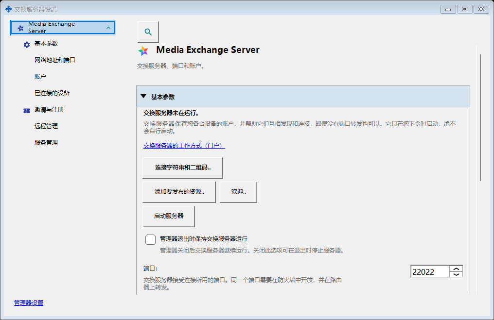
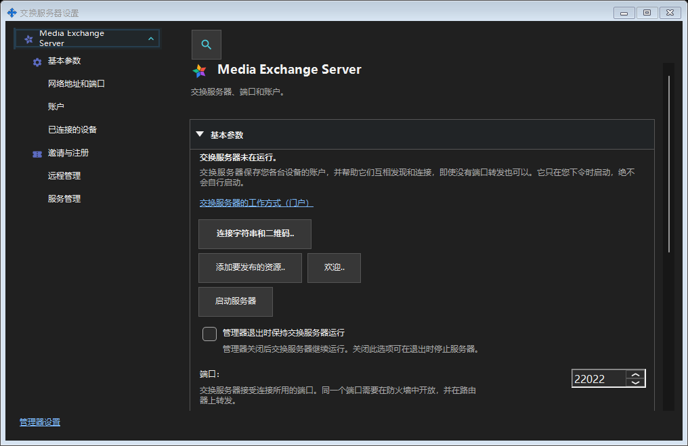

交换服务器设置
用途说明
SFTP：端口、连接数限制、仅局域网策略和 Windows 服务。交换服务器：地址、TLS、账户、设备、邀请、服务、日志和远程管理。


操作顺序
从托盘或组件链接打开。打开或关闭窗口不会启动或停止服务器。远程登录无需本地服务器。
界面元素
交换服务器设置
SFTP：端口、连接数限制、仅局域网策略和 Windows 服务。交换服务器：地址、TLS、账户、设备、邀请、服务、日志和远程管理。 从托盘或组件链接打开。打开或关闭窗口不会启动或停止服务器。远程登录无需本地服务器。